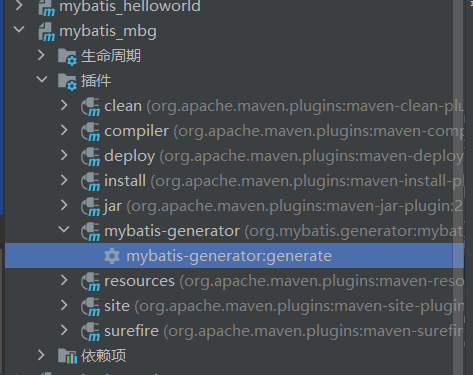

SSM框架 MyBatis 搭建MyBatis 创建maven工程
创建一个空的maven工程，将打包方式设置为jar
再导入如下依赖
1 2 3 4 5 6 7 8 9 10 11 12 13 14 15 16 17 18 <dependencies > <dependency > <groupId > org.mybatis</groupId > <artifactId > mybatis</artifactId > <version > 3.5.7</version > </dependency > <dependency > <groupId > junit</groupId > <artifactId > junit</artifactId > <version > 4.12</version > <scope > test</scope > </dependency > <dependency > <groupId > mysql</groupId > <artifactId > mysql-connector-java</artifactId > <version > 8.0.16</version > </dependency > </dependencies >
在数据库中创建一个表，并在main.java目录下创建表对应的类
例如创建一个User类，全类名可以命名为top.chen_qy.mybatis.pojo.User
创建MyBatis核心配置文件
在main目录下的resources下创建配置文件，习惯于命名为mybatis-config.xml
写入核心配置文件
1 2 3 4 5 6 7 8 9 10 11 12 13 14 15 16 17 18 19 20 21 22 23 <?xml version="1.0" encoding="UTF-8" ?> <!DOCTYPE configuration PUBLIC "-//mybatis.org//DTD Config 3.0//EN" "http://mybatis.org/dtd/mybatis-3-config.dtd" > <configuration > <environments default ="development" > <environment id ="development" > <transactionManager type ="JDBC" /> <dataSource type ="POOLED" > <property name ="driver" value ="com.mysql.cj.jdbc.Driver" /> <property name ="url" value ="jdbc:mysql://localhost:3306/ssm?serverTimezone=UTC" /> <property name ="username" value ="root" /> <property name ="password" value ="admin123" /> </dataSource > </environment > </environments > <mappers > <mapper resource ="" /> </mappers > </configuration >
创建mapper接口和映射文件
在main.java.top.chen_qy.mybatis下创建一个mapper目录对应的类名 + Mapper，例如我们创建UserMapper接口
然后我们在接口中定义一些方法，用于数据库的操作
1 2 3 4 5 6 7 package top.chen_qy.mybatis.mapper;public interface UserMapper { <!-- 添加用户信息 --> int insertUser () ; }
映射文件命名：表对应的类 + Mapper.xml，例如创建UserMapper.xml
映射文件存放在main/resources/mappers目录下
mapper接口和映射文件要保持两个一致：
mapper接口全类名和映射文件的namespace一致
mapper接口中的方法名要和映射文件中的sql的id一致
写入配置
1 2 3 4 5 6 7 8 9 10 11 12 13 14 15 16 17 18 <?xml version="1.0" encoding="UTF-8" ?> <!DOCTYPE mapper PUBLIC "-//mybatis.org//DTD Mapper 3.0//EN" "http://mybatis.org/dtd/mybatis-3-mapper.dtd" > <mapper namespace ="top.chen_qy.mybatis.mapper.UserMapper" > <insert id ="insertUser" > insert into t_user values(null, "cqy", "admin123") </insert > </mapper >
最后在mybatis核心配置文件中引入映射文件
1 2 3 4 5 6 7 8 9 10 11 12 13 <?xml version="1.0" encoding="UTF-8" ?> <!DOCTYPE configuration PUBLIC "-//mybatis.org//DTD Config 3.0//EN" "http://mybatis.org/dtd/mybatis-3-config.dtd" > <configuration > <mappers > <mapper resource ="mappers/UserMapper.xml" /> </mappers > </configuration >
测试用户信息添加功能
在test.java目录下创建测试文件
1 2 3 4 5 6 7 8 9 10 11 12 13 14 15 16 17 18 19 20 21 22 23 24 25 26 27 28 29 30 31 32 33 34 35 36 package top.chen_qy.mybatis.test;import org.apache.ibatis.io.Resources;import org.apache.ibatis.session.SqlSession;import org.apache.ibatis.session.SqlSessionFactory;import org.apache.ibatis.session.SqlSessionFactoryBuilder;import org.junit.Test;import top.chen_qy.mybatis.mapper.UserMapper;import java.io.IOException;import java.io.InputStream;public class t01 { @Test public void testInsert () throws IOException { InputStream is = Resources.getResourceAsStream("mybatis-config.xml" ); SqlSessionFactoryBuilder sqlSessionFactoryBuilder = new SqlSessionFactoryBuilder (); SqlSessionFactory sqlSessionFactory = sqlSessionFactoryBuilder.build(is); SqlSession sqlSession = sqlSessionFactory.openSession(); UserMapper mapper = sqlSession.getMapper(UserMapper.class); int result = mapper.insertUser(); System.out.println("result:" + result); sqlSession.commit(); sqlSession.close(); } }
注意： int或void接收都可以。User result = mapper.getUserById()。resultType或resultMap属性，它们俩只能配置其中一个
1 2 3 4 5 6 7 8 9 10 11 12 13 14 15 16 <?xml version="1.0" encoding="UTF-8" ?> <!DOCTYPE mapper PUBLIC "-//mybatis.org//DTD Mapper 3.0//EN" "http://mybatis.org/dtd/mybatis-3-mapper.dtd" > <mapper namespace ="top.chen_qy.mybatis.mapper.UserMapper" > <select id ="getUserById" resultType ="top.chen_qy.mybatis.pojo.User" > select * from t_user where id=11 </select > </mapper >
MyBatis优化功能 提取SqlSession对象为工具类
1 2 3 4 5 6 7 8 9 10 11 12 13 14 15 16 17 18 19 20 21 22 23 24 package top.chen_qy.mybatis.utils;public class sqlSessionUtil { public static SqlSession getSqlSession () { SqlSession sqlSession = null ; try { InputStream is = Resources.getResourceAsStream("mybatis-config.xml" ); SqlSessionFactoryBuilder sqlSessionFactoryBuilder = new SqlSessionFactoryBuilder (); SqlSessionFactory sqlSessionFactory = sqlSessionFactoryBuilder.build(is); sqlSession = sqlSessionFactory.openSession(true ); }catch (IOException e) { e.printStackTrace(); } return sqlSession; } }
添加log4j日志功能
pom.xml中添加依赖
1 2 3 4 5 <dependency > <groupId > log4j</groupId > <artifactId > log4j</artifactId > <version > 1.2.17</version > </dependency >
在resources目录下添加log4j配置文件
1 2 3 4 5 6 7 8 9 10 11 12 13 14 15 16 17 18 19 20 <?xml version="1.0" encoding="UTF-8" ?> <!DOCTYPE log4j :configuration SYSTEM "log4j.dtd" > <log4j:configuration xmlns:log4j ="http://jakarta.apache.org/log4j/" > <appender name ="STDOUT" class ="org.apache.log4j.ConsoleAppender" > <param name ="Encoding" value ="UTF-8" /> <layout class ="org.apache.log4j.PatternLayout" > <param name ="ConversionPattern" value ="%-5p %d{MM-dd HH:mm:ss,SSS} %m (%F:%L) \n" /> </layout > </appender > <logger name ="java.sql" > <level value ="debug" /> </logger > <logger name ="org.apache.ibatis" > <level value ="info" /> </logger > <root > <level value ="debug" /> <appender-ref ref ="STDOUT" /> </root > </log4j:configuration >
MyBatis核心配置文件 typeAliases 为某个类型设置别名，只有访问这个别名就可以访问到这个类型
1 2 3 4 5 6 7 8 9 10 11 12 13 14 15 16 17 18 19 20 <?xml version="1.0" encoding="UTF-8" ?> <!DOCTYPE configuration PUBLIC "-//mybatis.org//DTD Config 3.0//EN" "http://mybatis.org/dtd/mybatis-3-config.dtd" > <configuration > <typeAliases > <typeAlias type ="top.chen_qy.mybatis.pojo.User" alias ="abc" > </typeAlias > <typeAlias type ="top.chen_qy.mybatis.pojo.User" > </typeAlias > <package name ="top.chen_qy.mybatis.pojo" /> </typeAliases > </configuration >
这样配置之后就可以在映射文件中使用简短的类型别名
1 2 3 4 <select id ="getUserById" resultType ="User" > select * from t_user where id=11 </select >
mappers mappers就是用来存放一系列映射文件的，当映射文件多了之后，我们一个一个引入就很麻烦
首先我们在resources目录下创建一个包top.chen_qy.mybatis.mapper。top/chen_qy/mybatis/mapper，即用/来分隔，这样创建的才是包形式的。不然之后创建一个top.chen_qy.mybatis.mapper文件夹）
1 2 3 4 5 6 7 8 9 10 11 12 13 <?xml version="1.0" encoding="UTF-8" ?> <!DOCTYPE configuration PUBLIC "-//mybatis.org//DTD Config 3.0//EN" "http://mybatis.org/dtd/mybatis-3-config.dtd" > <configuration > <mappers > <package name ="top.chen_qy.mybatis.mapper" /> </mappers > </configuration >
以包的形式导入需要注意的：
mapper接口和映射文件所在的包必须一致
mapper接口的名字和映射文件的名字必须一致
这里看上去mapper接口在java目录下的top...，映射文件在resources目录下的top...
MyBatis获取参数 单个参数的情况：
MyBatis获取参数的两种方法：${}和#{}
当在参数是字面量时，两者用法相同${}还要在外面加一层引号'${}'
原因：
${}的本质是字符串拼接#{}的本质是占位符赋值
示例：
我们写一个按username获取信息的接口
1 2 3 4 5 6 package top.chen_qy.mybatis.mapper;import top.chen_qy.mybatis.pojo.User;public interface UserMapper { User getUserByUsername (String username) ; }
然后在映射文件中配置
1 2 3 4 5 6 7 8 <select id ="getUserByUsername" resultType ="user" > select * from t_user where username = '${username}' </select >
测试类
1 2 3 4 5 6 7 8 9 10 11 12 13 14 15 16 17 18 19 package top.chen_qy.mybatis.test;import org.apache.ibatis.session.SqlSession;import top.chen_qy.mybatis.mapper.UserMapper;import top.chen_qy.mybatis.pojo.User;import top.chen_qy.mybatis.utils.sqlSessionUtil;import org.junit.Test;public class test01 { @Test public void test () { SqlSession sqlSession = sqlSessionUtil.getSqlSession(); UserMapper mapper = sqlSession.getMapper(UserMapper.class); User res = mapper.getUserByUsername("crf" ); System.out.println(res); sqlSession.close(); } }
多个参数的情况：
当我们要传入多个参数时，mybatis会将参数放在map集合中，以两种方式存储数据
以arg0, arg1, ....为键，以参数为值
以param1, param2, ...为键，以参数为值
我们只需要通过#{}或${}访问map集合的键，就可以获取对应的值
在UserMapper.java中写一个接口
1 2 3 4 5 6 7 8 package top.chen_qy.mybatis.mapper;import top.chen_qy.mybatis.pojo.User;public interface UserMapper { User login (String username, String password) ; }
配置映射文件
1 2 3 4 5 6 <select id ="login" resultType ="user" > select * from t_user where username = #{arg0} and password = #{arg1} </select >
使用自定义的map传参
除了使用默认的map来传递参数，我们还可以自己定义一个map来直接传给接口
修改UserMapper.java中的接口
1 2 3 4 5 6 7 8 package top.chen_qy.mybatis.mapper;import top.chen_qy.mybatis.pojo.User;import java.util.Map;public interface UserMapper { User login (Map<String, String> map) ; }
测试类中定义一个map，并传入
1 2 3 4 5 6 7 8 9 10 11 12 @Test public void test2 () { SqlSession sqlSession = sqlSessionUtil.getSqlSession(); UserMapper mapper = sqlSession.getMapper(UserMapper.class); Map<String, String> map = new HashMap <>(); map.put("username" , "crf" ); map.put("password" , "123" ); User res = mapper.login(map); System.out.println(res); sqlSession.close(); }
修改映射文件
1 2 3 4 <select id ="login" resultType ="user" > select * from t_user where username = #{username} and password = #{password} </select >
注解参数法
可以在接口中为参数设置注解@Param(value)，这样mybatis就会将这些参数放到map中@Param注解的value为键，以参数为值
修改接口
1 2 3 4 5 6 7 8 9 package top.chen_qy.mybatis.mapper;import org.apache.ibatis.annotations.Param;import top.chen_qy.mybatis.pojo.User;import java.util.Map;public interface UserMapper { User login (@Param("username") String username, @Param("password") String password) ; }
在映射文件中就能用注解的值来作为键访问
1 2 3 <select id ="login" resultType ="user" > select * from t_user where username = #{username} and password = #{password} </select >
MyBatis查询功能 在查询数据时，并不是每次查询的结果都对应某个实体类。这个时候我们可以用map来接收
编写接口
1 2 3 4 5 6 7 8 9 10 package top.chen_qy.mybatis.mapper;import org.apache.ibatis.annotations.Param;import top.chen_qy.mybatis.pojo.User;import java.util.Map;public interface SelectMapper { Map<String, Object> getUser (@Param("id") Integer id) ; }
配置映射文件
1 2 3 4 <select id ="getUser" resultType ="map" > select * from t_user where id = #{id} </select >
测试类中
1 2 3 4 5 6 7 8 public void test1 () { SqlSession sqlSession = sqlSessionUtil.getSqlSession(); SelectMapper mapper = sqlSession.getMapper(SelectMapper.class); Map<String, Object> map = mapper.getUser(11 ); System.out.println(map); sqlSession.close(); }
上述是查询一条数据，多条数据的话用List包裹就可以了。
MyBatis批量处理 例如我们需要从表中删除id为11、12的数据，就可以使用mybatis的批量操作
编写接口
1 2 3 4 5 6 7 package top.chen_qy.mybatis.mapper;import org.apache.ibatis.annotations.Param;public interface SelectMapper { void deleteMoreUser (@Param("ids") String ids) ; }
配置映射文件${}来传参，并且不需要加引号。
1 2 3 <delete id ="deleteMoreUser" > delete from t_user where id in(${ids}) </delete >
测试类
1 2 3 4 5 6 7 8 @Test public void test3 () { SqlSession sqlSession = sqlSessionUtil.getSqlSession(); SelectMapper mapper = sqlSession.getMapper(SelectMapper.class); mapper.deleteMoreUser("11,12" ); sqlSession.close(); }
MyBatis动态设置表名 要操作的表也可以通过动态传入
编写接口
1 2 3 4 5 6 7 8 9 10 package top.chen_qy.mybatis.mapper;import org.apache.ibatis.annotations.Param;import top.chen_qy.mybatis.pojo.User;import java.util.List;public interface SelectMapper { List<User> getAllUser (@Param("tableName") String tableName) ; }
配置映射文件${}来接收参数，并且不需要引号。
1 2 3 <select id ="getAllUser" resultType ="user" > select * from ${tableName} </select >
测试类
1 2 3 4 5 6 7 8 @Test public void test2 () { SqlSession sqlSession = sqlSessionUtil.getSqlSession(); SelectMapper mapper = sqlSession.getMapper(SelectMapper.class); List<User> res = mapper.getAllUser("t_user" ); res.forEach(System.out::println); sqlSession.close(); }
MyBatis解决字段名和属性名不一致情况 有时候数据库中的表的字段名和实体类中的属性名不一致，这样会导致无法映射而取不到数据
方法一：
编写映射文件
1 2 3 4 5 6 7 8 9 10 <?xml version="1.0" encoding="UTF-8" ?> <!DOCTYPE mapper PUBLIC "-//mybatis.org//DTD Mapper 3.0//EN" "http://mybatis.org/dtd/mybatis-3-mapper.dtd" > <mapper namespace ="top.chen_qy.mybatis.mapper.EmpMapper" > <select id ="getEmpById" resultType ="emp" > select emp_id empId, emp_name empName, age, gender from t_emp where emp_id = #{empId} </select > </mapper >
方法二：
前提要求：
数据库表中的字段名使用的是xxx_xxx的下划线命名方法
实体类中的属性名使用的是xxXxx的驼峰命名方法
在mybatis配置文件中添加以下配置即可
1 2 3 4 5 6 7 8 9 10 11 <?xml version="1.0" encoding="UTF-8" ?> <!DOCTYPE configuration PUBLIC "-//mybatis.org//DTD Config 3.0//EN" "http://mybatis.org/dtd/mybatis-3-config.dtd" > <configuration > <settings > <setting name ="mapUnderscoreToCamelCase" value ="true" /> </settings > </configuration >
多表查询的映射 多对一查询映射 在实际开发中经常有多表查询的需求，例如：有一个员工表t_emp和部门表t_dept
emp类
1 2 3 4 5 6 7 8 9 public class Emp { private Integer empId; private String empName; private Integer age; private String gender; private Dept dept; }
dept类
1 2 3 4 public class Dept { private Integer deptId; private String deptName; }
接口编写
1 Emp getEmpAndDeptByEmpId (@Param("empId") Integer empId) ;
映射文件编写
1 2 3 4 5 6 <select id ="getEmpAndDeptByEmpId" resultType ="emp" > select * from t_emp left join t_dept on t_emp.dept_id = t_dept.dept_id where t_emp.emp_id = #{empId} </select >
这样查询除了的结果中，dept的内容是null。dept.deptId和dept.deptName
这个时候就需要用resultMap进行级联查询
配置映射文件
不再使用resultType，而是使用resultMap
使用resultMap标签来配置表字段和实体类的映射1 2 3 4 5 6 7 8 9 10 11 12 13 14 15 16 17 18 19 20 21 22 23 24 25 26 27 28 29 30 31 <?xml version="1.0" encoding="UTF-8" ?> <!DOCTYPE mapper PUBLIC "-//mybatis.org//DTD Mapper 3.0//EN" "http://mybatis.org/dtd/mybatis-3-mapper.dtd" > <mapper namespace ="top.chen_qy.mybatis.mapper.EmpMapper" > <resultMap id ="empAndDeptResultMap" type ="emp" > <id column ="emp_id" property ="empId" > </id > <result column ="emp_name" property ="empName" > </result > <result column ="age" property ="age" > </result > <result column ="gender" property ="gender" > </result > <result column ="dept_id" property ="dept.deptId" > </result > <result column ="dept_name" property ="dept.deptName" > </result > </resultMap > <select id ="getEmpAndDeptByEmpId" resultMap ="empAndDeptResultMap" > select * from t_emp left join t_dept on t_emp.dept_id = t_dept.dept_id where t_emp.emp_id = #{empId} </select > </mapper >
这样配置之后就可以查询出正确的结果
除此之外还可以使用association
1 2 3 4 5 6 7 8 9 10 11 12 13 14 15 16 17 18 19 20 21 22 23 24 25 26 27 28 29 30 31 32 33 <?xml version="1.0" encoding="UTF-8" ?> <!DOCTYPE mapper PUBLIC "-//mybatis.org//DTD Mapper 3.0//EN" "http://mybatis.org/dtd/mybatis-3-mapper.dtd" > <mapper namespace ="top.chen_qy.mybatis.mapper.EmpMapper" > <resultMap id ="empAndDeptResultMap" type ="emp" > <id column ="emp_id" property ="empId" > </id > <result column ="emp_name" property ="empName" > </result > <result column ="age" property ="age" > </result > <result column ="gender" property ="gender" > </result > <association property ="dept" javaType ="Dept" > <id column ="dept_id" property ="deptId" > </id > <result column ="dept_name" property ="deptName" > </result > </association > </resultMap > <select id ="getEmpAndDeptByEmpId" resultMap ="empAndDeptResultMap" > select * from t_emp left join t_dept on t_emp.dept_id = t_dept.dept_id where t_emp.emp_id = #{empId} </select > </mapper >
一对多查询映射 实际需求：当我们通过部门id查询部门的所有员工信息时，需要用到一对多映射
与使用association进行多对一查询，collection可以进行一对多查询，用法大致相同
Dept类
1 2 3 4 5 6 7 8 public class Dept { private Integer deptId; private String deptName; private List<Emp> emps; }
编写接口
1 2 3 4 public interface DeptMapper { Dept getDeptAndEmpByDeptId (@Param("deptId") Integer deptId) ; }
配置映射文件
1 2 3 4 5 6 7 8 9 10 11 12 13 14 15 16 17 18 19 20 21 22 23 24 25 26 27 28 29 30 31 <?xml version="1.0" encoding="UTF-8" ?> <!DOCTYPE mapper PUBLIC "-//mybatis.org//DTD Mapper 3.0//EN" "http://mybatis.org/dtd/mybatis-3-mapper.dtd" > <mapper namespace ="top.chen_qy.mybatis.mapper.DeptMapper" > <resultMap id ="deptAndEmpResultMap" type ="dept" > <id column ="dept_id" property ="deptId" > </id > <result column ="dept_name" property ="deptName" > </result > <collection property ="emps" ofType ="Emp" > <id column ="emp_id" property ="empId" > </id > <result column ="emp_name" property ="empName" > </result > <result column ="age" property ="age" > </result > <result column ="gender" property ="gender" > </result > </collection > </resultMap > <select id ="getDeptAndEmpByDeptId" resultMap ="deptAndEmpResultMap" > select * from t_dept left join t_emp on t_dept.dept_id = t_emp.emp_id where t_dept.dept_id = #{deptId} </select > </mapper >
动态sql MyBatis的动态sql解决了拼接sql字符串的痛点
if标签 if标签通过test属性中的表达式来判断标签中的内容是否有效（是否要拼接到sql中）
例如，我们可以通过员工姓名、年龄、性别的任意组合来查询数据
编写接口
1 2 3 public interface DynamicSQLMapper { List<Emp> getEmpByCondition (Emp emp) ; }
配置映射文件
1 2 3 4 5 6 7 8 9 10 11 12 13 14 15 16 17 18 19 <?xml version="1.0" encoding="UTF-8" ?> <!DOCTYPE mapper PUBLIC "-//mybatis.org//DTD Mapper 3.0//EN" "http://mybatis.org/dtd/mybatis-3-mapper.dtd" > <mapper namespace ="top.chen_qy.mybatis.mapper.DynamicSQLMapper" > <select id ="getEmpByCondition" resultType ="Emp" > select * from t_emp where 1=1 <if test ="empName != null and empName != ''" > and emp_name = #{empName} </if > <if test ="age != null and age != ''" > and age = #{age} </if > <if test ="gender != null and gender != ''" > and gender = #{gender} </if > </select > </mapper >
值得注意的是，
因为动态SQL的本质是字符串拼接，所以(1)处的1=1 是考虑到如果第一个if无效，那么下面的if直接拼接就会导致错误，变成select * from t_emp where and age = 20,where直接连接and导致错误
每个if中的语句在前面都要加上and来拼接
test属性中写的是if有效的条件，使用实体类中的属性。因为xml语法问题，与 和 或 的判断用and和or表示
where标签 功能：
如果where标签中有条件成立，会自动生成where关键字
会自动将where中内容前多余的and去掉
若where标签中没有任何一个条件成立，则where没有任何功能
1 2 3 4 5 6 7 8 9 10 11 12 13 14 <select id ="getEmpByCondition" resultType ="Emp" > select * from t_emp <where > <if test ="empName != null and empName != ''" > emp_name = #{empName} </if > <if test ="age != null and age != ''" > and age = #{age} </if > <if test ="gender != null and gender != ''" > and gender = #{gender} </if > </where > </select >
choose、when、otherwise choose标签中包裹when标签和otherwise标签，相当于if..else if...else。
1 2 3 4 5 6 7 8 9 10 11 12 13 14 15 16 17 18 19 20 21 <select id ="getEmpByCondition" resultType ="Emp" > select * from t_emp <where > <choose > <when test ="empName != null and empName != ''" > emp_name = #{empName} </when > <when test ="age != null and age != ''" > age = #{age} </when > <when test ="gender != null and gender != ''" > gender = #{gender} </when > </choose > </where > </select >
foreach 可以使用foreach标签进行批量操作
批量添加
接口编写
1 2 3 4 public interface DynamicSQLMapper { void insertEmps (@Param("emps") List<Emp> emps) ; }
配置映射文件
1 2 3 4 5 6 7 8 9 10 11 12 13 <insert id ="insertEmps" > insert into t_emp values <foreach collection ="emps" item ="emp" separator ="," > (#{emp.empId}, #{emp.empName}, #{emp.age}, #{emp.gender}, 1) </foreach > </insert >
测试类
1 2 3 4 5 6 7 8 9 10 @Test public void test2 () { SqlSession sqlSession = sqlSessionUtil.getSqlSession(); DynamicSQLMapper mapper = sqlSession.getMapper(DynamicSQLMapper.class); Emp emp1 = new Emp (6 , "xxx1" , 20 , "man" ); Emp emp2 = new Emp (7 , "xxx2" , 20 , "man" ); Emp emp3 = new Emp (8 , "xxx3" , 20 , "man" ); List<Emp> list = Arrays.asList(emp1, emp2, emp3); mapper.insertEmps(list); }
批量删除
编写接口
1 void deleteEmps (@Param("empIds") Integer[] empIds) ;
配置映射文件
1 2 3 4 5 6 7 8 9 10 11 12 13 14 15 16 17 18 19 <delete id ="deleteEmps" > delete from t_emp where emp_id in <foreach collection ="empIds" item ="empId" separator ="," open ="(" close =")" > #{empId} </foreach > </delete >
MyBatis逆向工程 逆向工程：先创建数据库表，有MyBatis负责根据数据库表，反向生成java实体类、Mapper接口、Mapper映射文件
添加插件和依赖
在pom.xml中添加插件和依赖
1 2 3 4 5 6 7 8 9 10 11 12 13 14 15 16 17 18 19 20 21 22 23 24 25 26 27 28 29 30 31 32 33 34 35 36 37 38 39 40 41 42 43 44 45 46 47 <build > <plugins > <plugin > <groupId > org.mybatis.generator</groupId > <artifactId > mybatis-generator-maven-plugin</artifactId > <version > 1.3.0</version > <dependencies > <dependency > <groupId > mysql</groupId > <artifactId > mysql-connector-java</artifactId > <version > 8.0.16</version > </dependency > <dependency > <groupId > org.mybatis.generator</groupId > <artifactId > mybatis-generator-core</artifactId > <version > 1.3.2</version > </dependency > </dependencies > </plugin > </plugins > </build > <dependencies > <dependency > <groupId > org.mybatis</groupId > <artifactId > mybatis</artifactId > <version > 3.5.7</version > </dependency > <dependency > <groupId > junit</groupId > <artifactId > junit</artifactId > <version > 4.12</version > <scope > test</scope > </dependency > <dependency > <groupId > mysql</groupId > <artifactId > mysql-connector-java</artifactId > <version > 8.0.16</version > </dependency > <dependency > <groupId > log4j</groupId > <artifactId > log4j</artifactId > <version > 1.2.17</version > </dependency > </dependencies >
创建逆向工程配置文件
在src/main/resources目录下创建generatorConfig.xml配置文件
1 2 3 4 5 6 7 8 9 10 11 12 13 14 15 16 17 18 19 20 21 22 23 24 25 26 27 28 29 30 31 32 33 34 35 36 37 38 39 40 41 42 43 44 45 46 47 48 49 50 51 52 53 54 55 56 57 <?xml version="1.0" encoding="UTF-8" ?> <!DOCTYPE generatorConfiguration PUBLIC "-//mybatis.org//DTD MyBatis Generator Configuration 1.0//EN" "http://mybatis.org/dtd/mybatis-generator-config_1_0.dtd" > <generatorConfiguration > <context id ="DB2Tables" targetRuntime ="MyBatis3Simple" > <property name ="javaFileEncoding" value ="UTF-8" /> <commentGenerator > <property name ="suppressAllComments" value ="true" /> </commentGenerator > <jdbcConnection driverClass ="com.mysql.cj.jdbc.Driver" connectionURL ="jdbc:mysql://localhost:3306/ssm?serverTimezone=UTC" userId ="root" password ="admin123" > </jdbcConnection > <javaModelGenerator targetPackage ="top.chen_qy.mybatis.pojo" targetProject =".\src\main\java" > <property name ="enableSubPackages" value ="true" /> <property name ="trimStrings" value ="true" /> </javaModelGenerator > <sqlMapGenerator targetPackage ="top.chen_qy.mybatis.mapper" targetProject =".\src\main\resources" > <property name ="enableSubPackages" value ="true" /> </sqlMapGenerator > <javaClientGenerator type ="XMLMAPPER" targetPackage ="top.chen_qy.mybatis.mapper" targetProject =".\src\main\java" > <property name ="enableSubPackages" value ="true" /> </javaClientGenerator > <table tableName =" domainObjectName=" "/> </context > </generatorConfiguration >
执行创建逆向工程

双击如图的mybatis-generator:generate即可
Spring 基于XML管理bean
创建maven工程
引入依赖（pom.xml中）1 2 3 4 5 6 7 8 9 10 11 12 13 <dependencies > <dependency > <groupId > org.springframework</groupId > <artifactId > spring-context</artifactId > <version > 5.3.1</version > </dependency > <dependency > <groupId > junit</groupId > <artifactId > junit</artifactId > <version > 4.12</version > <scope > test</scope > </dependency > </dependencies >
创建实体类1 2 3 4 5 6 7 8 9 10 11 12 13 package top.chen_qy.spring.pojo;public class Student { private Integer sid; private String sname; private Integer age; private String gender; }
创建Spring配置文件1 2 3 4 5 6 7 <?xml version="1.0" encoding="UTF-8" ?> <beans xmlns ="http://www.springframework.org/schema/beans" xmlns:xsi ="http://www.w3.org/2001/XMLSchema-instance" xsi:schemaLocation ="http://www.springframework.org/schema/beans http://www.springframework.org/schema/beans/spring-beans-3.0.xsd" ></beans >
在Spring配置文件中配置bean1 2 3 4 5 6 7 8 9 10 11 12 13 14 <?xml version="1.0" encoding="UTF-8" ?> <beans xmlns ="http://www.springframework.org/schema/beans" xmlns:xsi ="http://www.w3.org/2001/XMLSchema-instance" xsi:schemaLocation ="http://www.springframework.org/schema/beans http://www.springframework.org/schema/beans/spring-beans-3.0.xsd" > <bean id ="studentOne" class ="top.chen_qy.spring.pojo.Student" > </bean > </beans >
测试类1 2 3 4 5 6 7 8 9 10 public class IOCByXMLTest { @Test public void test () { ApplicationContext ioc = new ClassPathXmlApplicationContext ("spring_ioc.xml" ); Student student = (Student) ioc.getBean("studentOne" ); System.out.println(student); } }
获取bean的三种方式 根据bean的id获取
1 <bean id ="studentOne" class ="top.chen_qy.spring.pojo.Student" > </bean >
1 2 Student student = (Student) ioc.getBean("studentOne" );
根据bean的类型获取
1 <bean id ="studentOne" class ="top.chen_qy.spring.pojo.Student" > </bean >
1 2 Student student = ioc.getBean(Student.class);
注意：根据类型获取bean时，要求IOC容器中有且只有一个类型匹配的bean
1 2 <bean id ="studentOne" class ="top.chen_qy.spring.pojo.Student" > </bean > <bean id ="studentTwo" class ="top.chen_qy.spring.pojo.Student" > </bean >
类型匹配情况下，用id进行进一步匹配
1 Student student = ioc.getBean("studentOne" , Student.class);
依赖注入 实体类中的属性就是这个实体类的依赖，所以依赖注入就是为实体类属性赋初始值
setter注入
1 2 3 4 5 6 7 8 9 10 11 12 13 14 15 16 17 18 <?xml version="1.0" encoding="UTF-8" ?> <beans xmlns ="http://www.springframework.org/schema/beans" xmlns:xsi ="http://www.w3.org/2001/XMLSchema-instance" xsi:schemaLocation ="http://www.springframework.org/schema/beans http://www.springframework.org/schema/beans/spring-beans-3.0.xsd" > <bean id ="studentOne" class ="top.chen_qy.spring.pojo.Student" > <property name ="sid" value ="1001" > </property > <property name ="sname" value ="cqy" > </property > <property name ="age" value ="20" > </property > <property name ="gender" value ="man" > </property > </bean > </beans >
构造器注入
1 2 3 4 5 6 7 <bean id ="studentOne" class ="top.chen_qy.spring.pojo.Student" > <constructor-arg value ="1002" > </constructor-arg > <constructor-arg value ="kyrie" > </constructor-arg > <constructor-arg value ="29" > </constructor-arg > <constructor-arg value ="man" name ="gender" > </constructor-arg > </bean >
特殊值处理
当我们直接将null赋值给value时，得到的是字符串形式的null。
1 2 3 4 5 6 7 8 <bean id ="studentOne" class ="top.chen_qy.spring.pojo.Student" > <property name ="sid" value ="1001" > </property > <property name ="sname" value ="cqy" > </property > <property name ="age" > <null /> </property > <property name ="gender" value ="man" > </property > </bean >
小于大于号可能会被误解析为标签的结束或开始，所以用< >代替。CDATA区来书写特殊字符，在CDATA区中的字符 会被原样解析
1 2 3 4 5 6 7 8 9 10 11 12 13 14 <bean id ="studentOne" class ="top.chen_qy.spring.pojo.Student" > <property name ="sid" value ="1001" > </property > <property name ="sname" > <vaule > <![CDATA[ >< ]]> </value > </property > <property name ="age" value ="20" > </property > <property name ="gender" value ="man" > </property > </bean >
类类型的属性赋值之引用外部bean
场景；Student类中除了学生基本信息，还有一个属性是所在班级信息private Clazz clazzcid, cname两个属性。现在要进行依赖注入
使用value肯定是不行的，所以要使用ref属性，ref的值是引用的bean的id
1 2 3 4 5 6 7 8 9 10 11 12 <bean id ="studentOne" class ="top.chen_qy.spring.pojo.Student" > <property name ="sid" value ="1001" > </property > <property name ="sname" value ="cqy" > </property > <property name ="age" value ="20" > </property > <property name ="gender" value ="man" > </property > <property name ="clazz" ref ="clazzOne" > </property > </bean > <bean id ="clazzOne" class ="top.chen_qy.spring.pojo.Clazz" > <property name ="cid" value ="111" > </property > <property name ="cname" value ="computer" > </property > </bean >
类类型的属性赋值之内部bean
缺点：无法在外部被单独访问
1 2 3 4 5 6 7 8 9 10 11 12 <bean id ="studentOne" class ="top.chen_qy.spring.pojo.Student" > <property name ="sid" value ="1001" > </property > <property name ="sname" value ="cqy" > </property > <property name ="age" value ="20" > </property > <property name ="gender" value ="man" > </property > <property name ="clazz" > <bean id ="classInner" class ="top.chen_qy.spring.pojo.Clazz" > <property name ="cid" value ="222" > </property > <property name ="cname" value ="computer" > </property > </bean > </property > </bean >
数组类型的属性赋值
1 2 3 4 5 6 7 8 9 10 <property name ="hobby" > <array > <value > 唱歌</value > <value > 跳舞</value > <value > rap</value > <value > 篮球</value > </array > </property >
list集合的赋值
1 2 3 4 5 6 7 8 <property name ="students" > <list > <value > xxx</value > <ref bean ="xxx" > </ref > </list > </property >
方法二：配置一个list集合的bean
1 2 3 4 5 <property name ="students" ref ="studentList" /> <util:list id ="studentList" > <vaule > xxx</value > <ref bean ="xxx" > </ref > </util:list >
map集合的赋值
1 2 3 4 5 6 <property name ="students" > <map > <entry key ="xxx" value ="xx" > </entry > </map > </property >
方法二：
1 2 3 4 <property name ="students" ref ="studentMap" /> <util:mapper接口和映射文件所在的包必须一致 id="studentMap"> <entry key ="" value ="" /> </util:map >